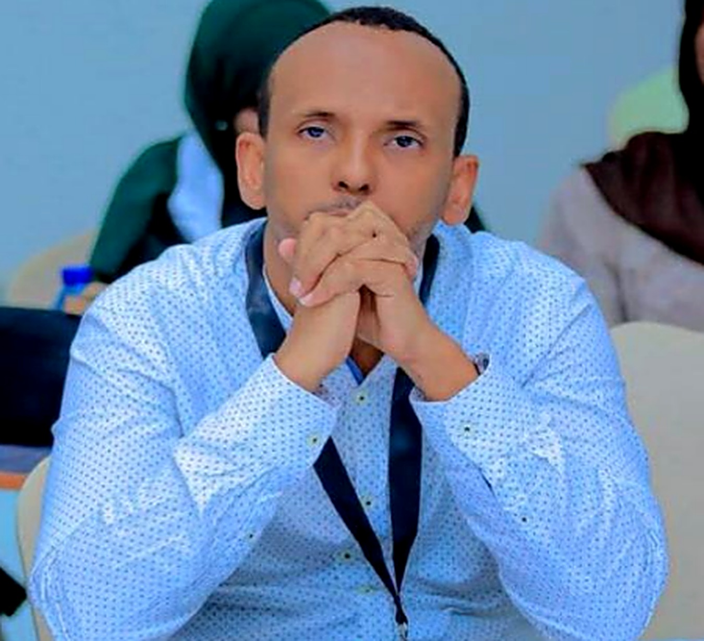

Liban Ismail Abdillahi
Maître de conférences en mathématiques appliquées et directeur du Laboratoire d'Analyse, de Modélisation et d'Optimisation.
Je modélise les systèmes complexes, de la dynamique des épidémies aux risques climatiques, pour que les décisions publiques s'appuient sur des chiffres solides et une incertitude assumée.

Comprendre ce qui fait varier un modèle, pour mieux décider.
Je suis maître de conférences en mathématiques appliquées à l'Université de Djibouti et directeur du Laboratoire d'Analyse, de Modélisation et d'Optimisation (LAMO). Mes recherches portent sur la modélisation mathématique, les statistiques, la science des données, la recherche opérationnelle et l'optimisation, avec des applications en santé publique, en environnement, en énergie, en logistique et en développement durable.
Docteur de l'Université Clermont Auvergne depuis 2023, j'ai consacré ma thèse à l'analyse de sensibilité globale de modèles issus du climat, de l'épidémiologie et de la finance. Depuis, je poursuis le même fil : comprendre comment l'incertitude sur les paramètres d'un modèle se propage jusqu'aux décisions qu'il éclaire.
Je suis aussi le fondateur et le coordinateur académique du master Intelligence Artificielle et Modélisation des Données, je co-encadre des doctorats en cotutelle avec des universités françaises et éthiopiennes, et j'évalue des manuscrits pour des revues internationales de Springer Nature. Ce travail s'inscrit dans une conviction simple : les mathématiques doivent servir des questions scientifiques et sociétales bien réelles.
- PosteMaître de conférences en mathématiques appliquées, Université de Djibouti
- DirectionDirecteur du Laboratoire d'Analyse, de Modélisation et d'Optimisation (LAMO)
- FormationFondateur et coordinateur académique du Master IAMD
- ExpertiseÉvaluateur pour des revues scientifiques internationales à comité de lecture
Cinq axes pour modéliser, quantifier et décider.
Une même démarche relie mes travaux : construire un modèle, mesurer son incertitude, puis s'en servir pour choisir une action. Explorez chaque axe ci-dessous.
Articles scientifiques à comité de lecture.
Mes travaux publiés et à paraître, avec les collègues qui les ont rendus possibles. Chaque article renvoie à sa référence officielle (DOI).
La liste complète et les citations sont disponibles sur le profil Google Scholar.
Ouvrir Google ScholarFormer la prochaine génération de chercheurs.
Je co-encadre cinq doctorants du LAMO, dans le cadre de cotutelles avec des universités françaises et éthiopiennes. Leurs sujets vont de l'analyse numérique à l'épidémiologie, en passant par l'intelligence artificielle fiable.
Direction de thèse indiquée à côté de chaque sujet. Je suis co-encadrant au sein du LAMO, aux côtés du Dr Yahyeh Souleiman pour plusieurs de ces thèses.
Un réseau de collaborations entre l'Afrique et l'Europe.
Transmettre une pensée rigoureuse des données.
Cours dont j'ai la charge
Laboratoire LAMO
Des mathématiques au service des institutions.
Au-delà du laboratoire, j'accompagne des institutions publiques, universitaires et privées dans leur transformation numérique et dans le pilotage de leur performance par les données.
Projets et missions choisis
Disponible pour des missions d'assistance technique internationales en transformation numérique, gouvernance des données, intelligence artificielle et gestion axée sur les résultats.
Proposer une collaborationDe Djibouti à Clermont-Ferrand, et retour.
Un parcours entre recherche, enseignement et expertise.
L'essentiel de mon profil en un coup d'œil, avec le CV complet à consulter ici ou à télécharger.
En bref
Compétences
Langues
Si l'aperçu ne s'affiche pas, utilisez le bouton de téléchargement ci-dessus.
Une question, un projet, une collaboration ?
Étudiants, chercheurs, institutions et partenaires : je réponds avec plaisir à toute proposition de recherche, d'encadrement ou de mission.